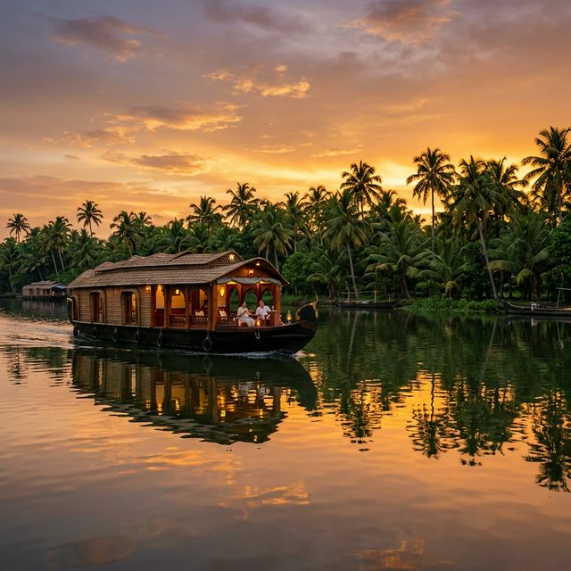

01
Green backwater scenery
Coconut-lined canals, still water, birdlife, and a houseboat route that feels rooted in Kerala instead of generic tourism.
Kerala greenery, backwaters, and houseboat comfort
Punnamada Kayal, AlappuzhaUBJ Houseboats brings you into the calm side of Kerala with open-deck cruising, warm local meals, polished cabins, and a backwater experience that feels grounded instead of overdone.
Designed for guests who want Kerala to feel lush, slow, and beautifully looked after.
01
Coconut-lined canals, still water, birdlife, and a houseboat route that feels rooted in Kerala instead of generic tourism.
02
Fresh karimeen, local spices, warm breakfasts, tea on deck, and menus tailored in advance when you let us know your preferences.
03
No dead-end buttons. Call, WhatsApp, or open maps to reach us directly and check availability.
About UBJ
UBJ Houseboats is shaped by what people come to Alappuzha for: water, greenery, slow travel, and the feeling of being looked after without fuss. Our cruises are meant to feel grounded in the backwaters, not staged away from them.
That means open views from the deck, locally inspired meals, thoughtful pacing, and a team that understands when to guide and when to simply let the scenery do the work.

The backwater journey
Each part of the day has a mood of its own, creating a memorable experience on the water.

Early light, soft mist, and village life beginning along the banks set the tone for a slower, greener day on the water.

Meals are part of the experience, with familiar regional flavors served in a way that feels welcoming rather than formal.

As the light turns gold, the deck becomes the best seat in the backwaters for tea, conversation, and quiet views.

On board
Good houseboat stays should feel polished, but never detached from the place itself. The cabins, deck spaces, and dining areas on UBJ Houseboats keep the timber-and-water character intact while giving guests the essentials they actually care about.
The people on board

Master Captain & Safety Officer
Experienced captain ensuring safe passage and memorable journeys through the backwaters of Kerala.

Houseboat pilot and navigation support
Expert in maneuvering through narrow canals and ensuring smooth sailing throughout the journey.

Fresh Kerala cooking & Hospitality
Known for simple, satisfying backwater meals that feel homely and generous instead of overdone.

Premium Backwater Cuisine
Brings local flavors to life with authentic spices, ensuring every meal onboard is a memorable experience.
Packages
Every package can be adjusted for guest count, food preference, and season.
Easy daytime plan
11:00 AM to 5:00 PM
Best overall experience
Check-in 12:00 PM | Check-out 9:00 AM
Custom longer stay
2 nights and beyond
Location
Alappuzha (Alleppey), known as the "Venice of the East," is Kerala's backwater capital. Our boarding point at Punnamada Kayal opens into the iconic scenery that defines this region: wide water, greener edges, quieter village channels, and the serene atmosphere that makes Kerala houseboats world-famous. Located in God's Own Country, Alappuzha offers a unique blend of natural beauty, cultural heritage, and tranquil waterways.
UBJ HouseboatsGuest impressions
The greenery around the route was exactly what we hoped for. It felt peaceful and natural, and the overnight stay was calm from start to finish.
The food and the deck time made the trip. Nothing felt rushed, and the crew were genuinely warm without making it feel over-managed.
Easy to contact, easy to find, and the actual houseboat experience matched the promise. That is rarer than it should be.
Gallery


FAQ
October to March is the most popular season for pleasant weather, but the monsoon months bring especially lush greenery and a quieter feel.
Pricing varies based on several factors: number of guests, cruise type (day cruise or overnight stay), food preferences (vegetarian/non-vegetarian/special dietary needs), season (peak/off-peak), and houseboat size. Contact us via WhatsApp or call for a customized quote tailored to your requirements.
All packages include meals (as per duration), welcome drinks, tea and snacks, experienced crew service, and safety equipment. Specific inclusions vary by package type and can be customized.
Yes. Share your food preferences while booking and we will plan the menu accordingly.
Our houseboats can accommodate 2-8 guests depending on the boat configuration. We can recommend the right houseboat size based on your group.
We recommend booking at least 1-2 weeks in advance, especially during peak season (October to March). However, contact us for last-minute availability as well.
WhatsApp is the quickest option. You can also call directly to check availability and discuss your requirements.
Get in touch
Send us a quick message on WhatsApp or give us a call. We're here to help plan your perfect houseboat journey.
UBJ Houseboats